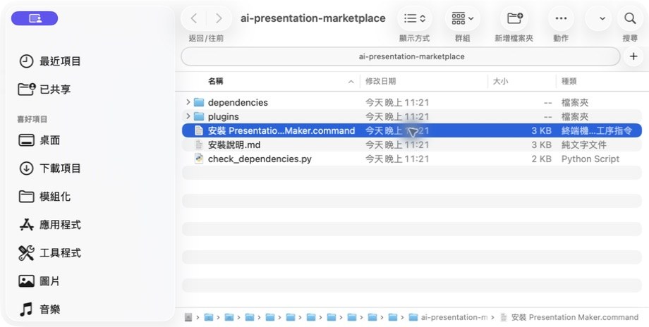
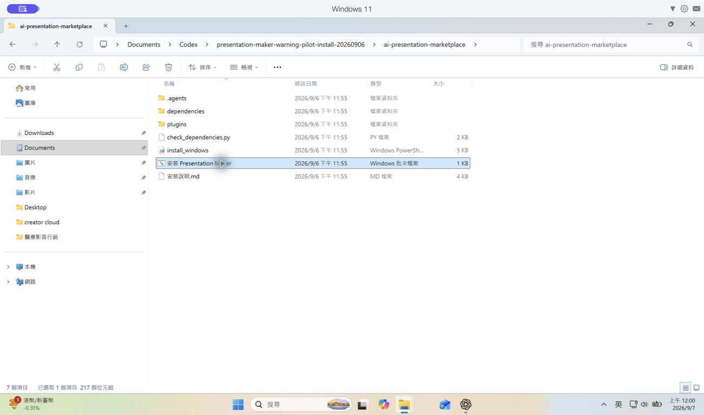
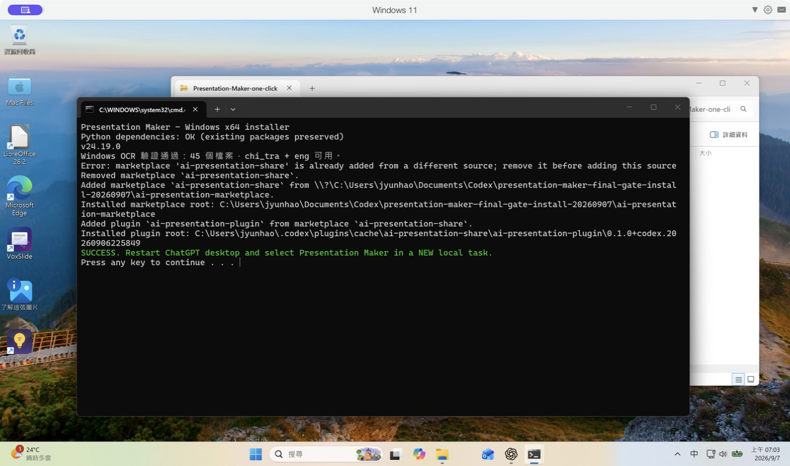

跟著畫面，完成安裝。
1. GitHub 指令安裝 2. Mac 手動安裝 3. Windows 手動安裝
1. GitHub 指令安裝
① 取得安裝指令
從外掛入口取得下載連結與安裝說明。若入口顯示購買資訊，依該頁說明取得外掛；收到安裝指令後，切到桌面 Codex 本機任務。
② 貼上送出 → ③ 確認權限 → ④ 開新任務
將指令貼入桌面 Codex 的本機任務。代理會讀指南、下載、核對並安裝；只看到「已下載」不代表完成。成功結果應包含版本、啟用狀態與安裝位置。
必要時重新開啟 App，再於新本機任務選 Presentation Maker。
2. Mac 手動安裝
① 下載 macOS ZIP，完整解壓縮
選 Presentation-Maker-macOS.zip 安裝包，不要下載 Source code。

③ 確認安裝成功，再開新任務
不要關閉仍在執行的安裝視窗。看到「安裝成功」後，重新開啟桌面 App，在新本機任務選取 Presentation Maker。若顯示錯誤，保留訊息供排查。
3. Windows 手動安裝
Windows 11 ARM 已完成安裝測試
使用桌面 App 提供的 x64 Python；內附繁中／英文 OCR 已驗證可執行。下方為本次實際安裝截圖。x64 實體電腦尚未另行實測。
- 下載 Windows ZIP
從提供的下載連結選 Presentation-Maker-Windows.zip，不要選 Source code。
- 按右鍵 → 解壓縮全部
開啟解壓後的 ai-presentation-marketplace 資料夾，不要直接在 ZIP 中執行。
- 雙擊「安裝 Presentation Maker.bat」
保留 install_windows.ps1、dependencies 與 plugins。安全提示或組織封鎖時先核對來源，不要停用防毒。
- 確認成功 → 開新本機任務
若顯示失敗，保留錯誤訊息並交給 Codex 排查；不要把下載完成當成安裝完成。


確認安裝結果
安裝程式會驗證外掛啟用狀態與繁中 OCR。看到 SUCCESS 後，重新開啟桌面 App，再於新本機任務選取 Presentation Maker。
遇到初始化或安全提示？
尚缺執行環境：先在桌面 Codex 本機任務輸入「請初始化本機 Python 與 Node.js 執行環境」，完成後再安裝。系統拒絕執行時，先核對發布者與下載來源；不要全面關閉安全保護。